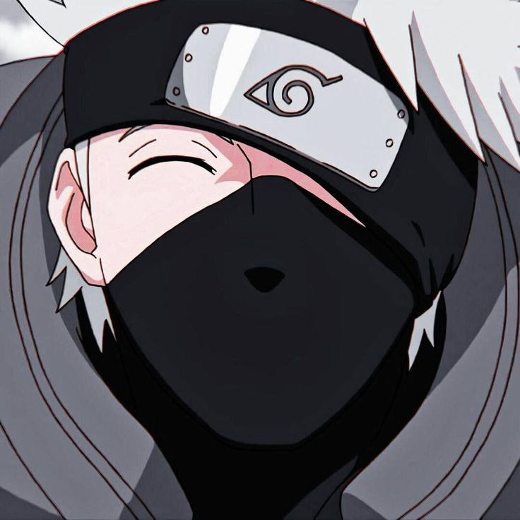
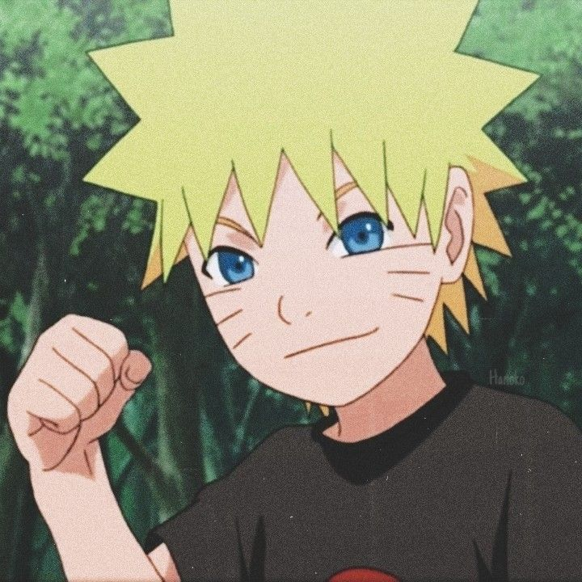
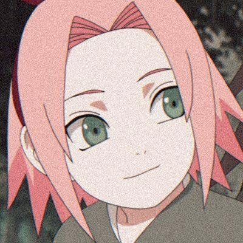
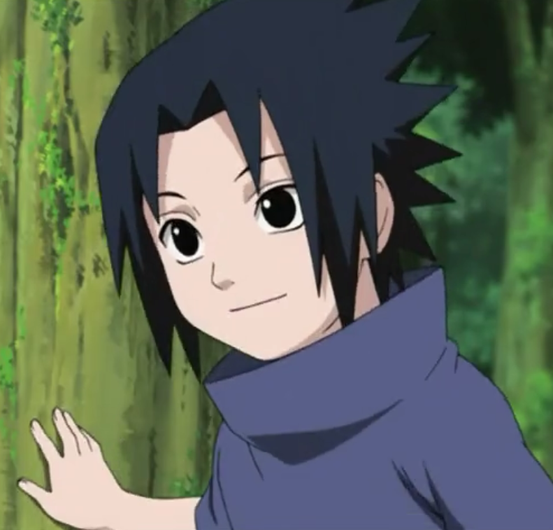

Series Naruto
Road to Ninja
Road to Ninja
Team 7 was a Konohagakure team formed under the leadership of Kakashi Hatake. Two-and-a-half years after Sasuke Uchiha left the village, Kakashi filled out paperwork to form Team Kakashi, with his former pupils Naruto Uzumaki and Sakura Haruno now being treated as equals alongside their teacher. Following Yamato and Sai joining the team, the group went by Team Yamato during the former's leadership.
Hatake Kakashi
Uzumaki Naruto
Haruno Sakura
Uchiha Sasuke
All Series
Power Team 7
Six path
The Six Paths Yang Power is a power wielded by Hagoromo Ōtsutsuki and later given to Naruto Uzumaki. It is represented by a light-coloured, sun-like palm seal on the user's right hand.
Byakugou
Awakened The Byakugou, This is a seal on her forehead, which she finally awakened after her chakra storage process was complete.
Six path
The Six Paths Yin Power is a power wielded by Hamura and Hagoromo Ōtsutsuki, and later given to Sasuke Uchiha. It is represented by a dark-coloured, crescent moon-like palm seal on the user's left hand.
Front-End Web Developer
KienGiang, VietNam
+84 0828066055
Email: npavu2811@gmail.com

This state is indicated with Naruto's pupils consisting of a cross of vertical fox-slits with horizontal toad-slits, and there is no pigmentation around his eyes that would otherwise signify the standard Sage Mode. Since Naruto first awakened this power, he has always used it simultaneously with the Nine-Tails Chakra Mode. Directly after obtaining Hagoromo Ōtsutsuki's power, Naruto's eyes are yellow and later orange with the various chakra modes he uses after the war, just like his previous ones before meeting Hagoromo. This mode increases the user's physical parameters well above that of Sage Mode and the Nine-Tails Chakra Mode,[1] as Naruto was able to kick away Truth-Seeking Balls before entering the Nine-Tails Chakra Mode with this power. As a heightened state of Sage Mode, Naruto's jutsu are augmented with larger amounts of natural energy to make them stronger. With the power he received from Hagoromo, Naruto gains a masterful grasp of chakra, control over all things in nature, and the ability to comprehend all universal things.His sensing ability also rises to the point where he can sense and thus react to the invisible shadows in the world of Limbo.
This state is indicated with Naruto's pupils consisting of a cross of vertical fox-slits with horizontal toad-slits, and there is no pigmentation around his eyes that would otherwise signify the standard Sage Mode. Since Naruto first awakened this power, he has always used it simultaneously with the Nine-Tails Chakra Mode. Directly after obtaining Hagoromo Ōtsutsuki's power, Naruto's eyes are yellow and later orange with the various chakra modes he uses after the war, just like his previous ones before meeting Hagoromo. This mode increases the user's physical parameters well above that of Sage Mode and the Nine-Tails Chakra Mode,[1] as Naruto was able to kick away Truth-Seeking Balls before entering the Nine-Tails Chakra Mode with this power. As a heightened state of Sage Mode, Naruto's jutsu are augmented with larger amounts of natural energy to make them stronger. With the power he received from Hagoromo, Naruto gains a masterful grasp of chakra, control over all things in nature, and the ability to comprehend all universal things.His sensing ability also rises to the point where he can sense and thus react to the invisible shadows in the world of Limbo.
This state is indicated with Naruto's pupils consisting of a cross of vertical fox-slits with horizontal toad-slits, and there is no pigmentation around his eyes that would otherwise signify the standard Sage Mode. Since Naruto first awakened this power, he has always used it simultaneously with the Nine-Tails Chakra Mode. Directly after obtaining Hagoromo Ōtsutsuki's power, Naruto's eyes are yellow and later orange with the various chakra modes he uses after the war, just like his previous ones before meeting Hagoromo. This mode increases the user's physical parameters well above that of Sage Mode and the Nine-Tails Chakra Mode,[1] as Naruto was able to kick away Truth-Seeking Balls before entering the Nine-Tails Chakra Mode with this power. As a heightened state of Sage Mode, Naruto's jutsu are augmented with larger amounts of natural energy to make them stronger. With the power he received from Hagoromo, Naruto gains a masterful grasp of chakra, control over all things in nature, and the ability to comprehend all universal things.His sensing ability also rises to the point where he can sense and thus react to the invisible shadows in the world of Limbo.